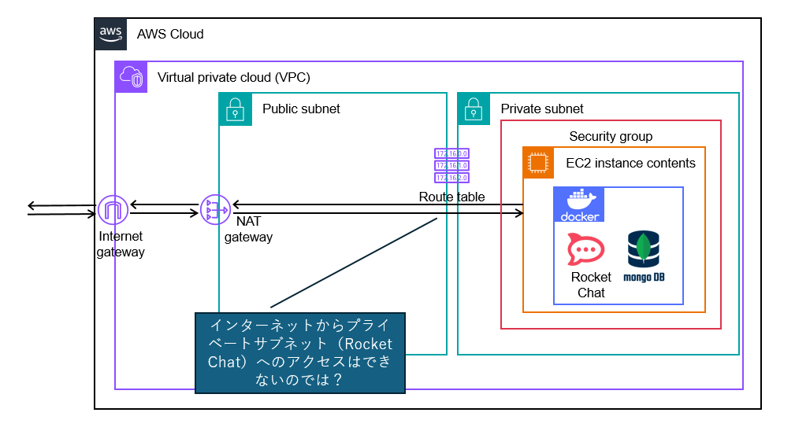
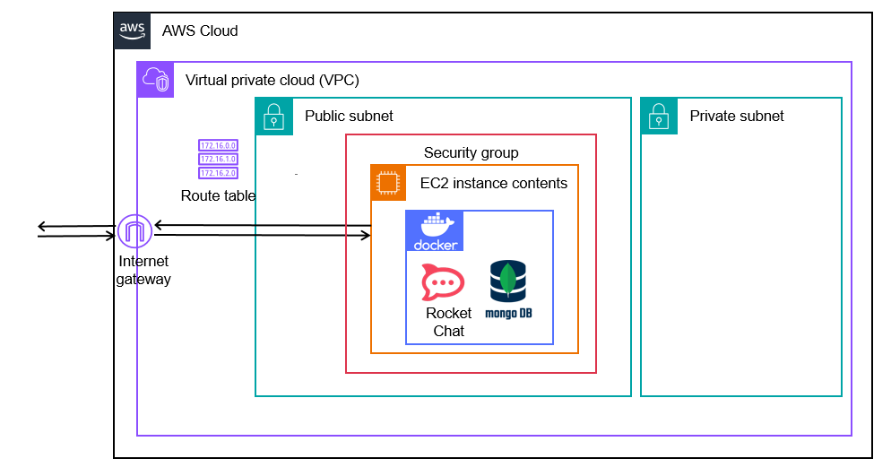
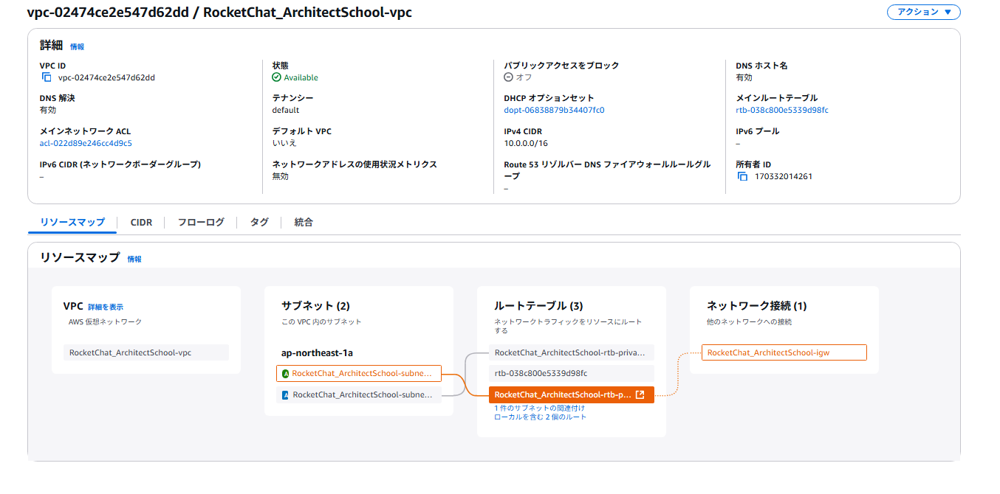

AWS環境でRocketChatを使用できる環境を構築する¶
This is the content of the report. You can add sections, subsections, and other content as needed.
実施内容¶
アーキテクト塾での作業内容を以下に記載する。
環境構築準備¶
RocketChatをAWS上で利用するにあたって、以下の手順で環境を構築する。

以下のアーキテクチャだとRocket Chatへのアクセスが可能なのか？

上記のアーキテクチャでまずはRocket Chatへのアクセスが可能な状態まで構築する。
VPCの作成
サブネットの作成
- インターネットゲートウェイの作成
VPCにアタッチ（パブリックサブネット-VPC外の通信に必要）
- NATゲートウェイの作成
パブリックサブネットにアタッチ（プライベートサブネット-VPC外の通信に必要(パブリックサブネットからインターネットゲートウェイを経由)）
ルートテーブルの作成
- セキュリティグループの作成
SSH,HTTPのインバウンド接続を許可
- EC2の作成
パブリックサブネットに作成
Linux、t2microを使用→メモリが不足していたので、t2.smallに変更
環境構築¶
VPCの作成
以下でVPCを作成 RocketChat_ArchitectSchool-vpc

EC2の作成
Amazon Linux 2023 AMI、t2micro
SSH(全てのトラフィック)、HTTPS、HTTPを許可
Instance Connectを可能にするロールを作成してEC2にアタッチ済み（RochetChat_ArchiSchool_EC2InstanceConnect）
Dockerのインストール、ならびにmongodbとRocket Chatのイメージのインストールとコンテナの作成まで完了。
パブリックIPを使用してのHTTP通信でRocket Chatにアクセスしようとすると、会社のFWにはじかれてアクセスできない状態。
RocketChatの導入
EC2インスタンスへのRocketChat導入手順については以下を参照
'RocketChat導入手順<https://ryonaka-itb.github.io/ArchiDocs/install.html>'_
SSM接続設定¶
ロールのアタッチ
AmazonSSMManagedInstanceCoreをEC2インスタンスにアタッチ
→「RocketChat_ArchiSchool_SSM」ロールを作成して、「AmazonSSMManagedInstanceCore」ポリシーをアタッチ
エージェントのインストール
Linuxのインスタンスには最初からインストール済み。
SSMセッションの開始
AWSコンソールでSystem Managerにアクセス
セッションマネージャーより対象のインスタンスを選択してセッションを開始
問題点¶
Sphinxを用いて作成したhtmlとGithub上で公開しているhtmlの表示が一致しない。(テーマが適用されていない)
→conf.pyのextensionsに["sphinx.ext.githubpages",]を記載することで解消
Rocket Chatをインストールするインスタンスはプライベートサブネットとパブリックサブネットのどちらに作成するべきなのか？
→プライベートサブネットに作成した場合はパブリックサブネットにNATインスタンスを構築して経由する必要がある。 どうしても隠す必要があるものはプライベートサブネット、それ以外はパブリックサブネットに構築がベーシックな考え方。 （パブリックサブネット＝家に置いておく、プライベートサブネット＝さらに金庫の中に入れる みたいなイメージ）
SSHのインバウンド通信でマイIPあるいはBXOのIPだけに制限した場合、Instance Connectで接続ができなくなったが、なぜなのか？
(追記)EC2インスタンスから見えているIPが異なるのでは無いかと推測。（プロキシサーバなどを中継するから？）
ifconfig.meにアクセスすることで外部から見えているIPがわかるため（aiChat調べ）、調べた結果を用いてインバウンドルールを設定。
165.225.97.4を結果として得たため、165.225.97.0/24を設定
⇒SSH接続失敗。
⇒InstanceConnectではAWSのリージョン内にあるどこかのサーバAを踏み台にしてアクセスをしている。
そのため、ECSから見たらどこかのサーバAから接続しているように見えている（＝そこの穴あけが必要）
AWSとしてはSSMを使用して接続することを推奨している。
構築しているAWSサービスがどのような環境になっているか（アーキテクチャ図）みたいなものを簡単に確認する方法は無いのか？
「SSHを利用せずに接続できる」ことのメリットは何なのか？
EC2インスタンスとの接続においてInstanceConnect、セッションマネージャを使用するよりもSSHクライアントからの接続を使用したほうが良い場面はどのような時なのか？